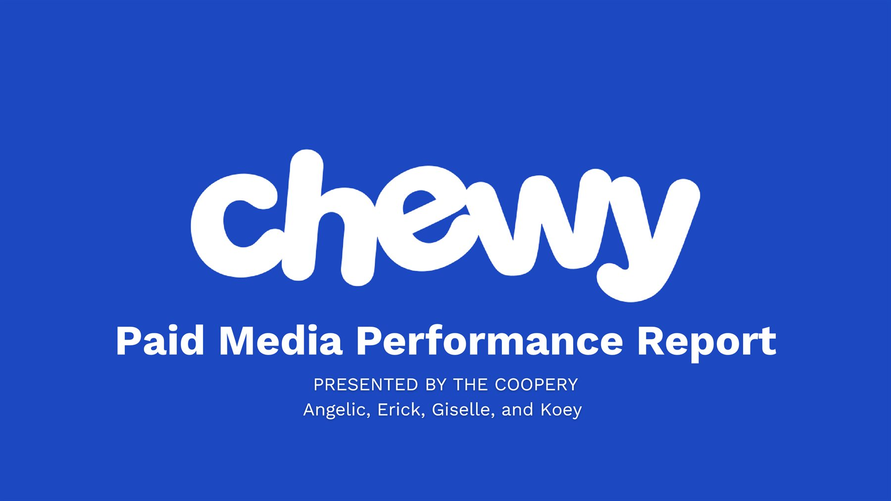
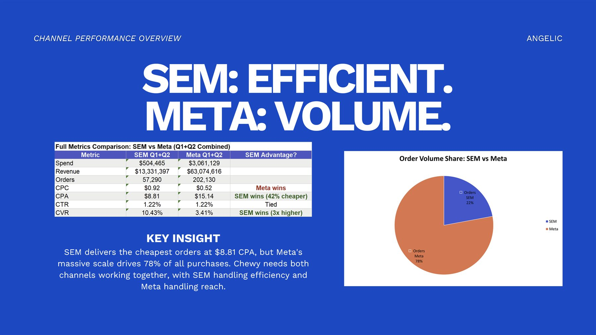
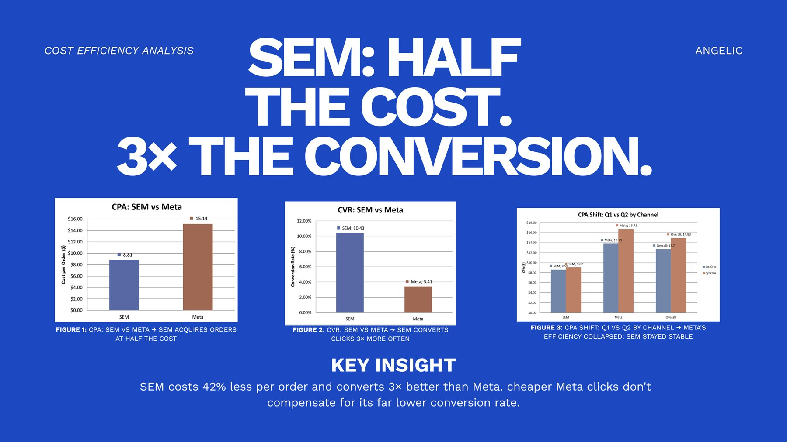
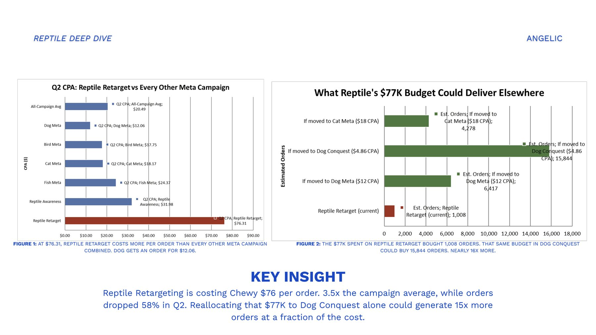
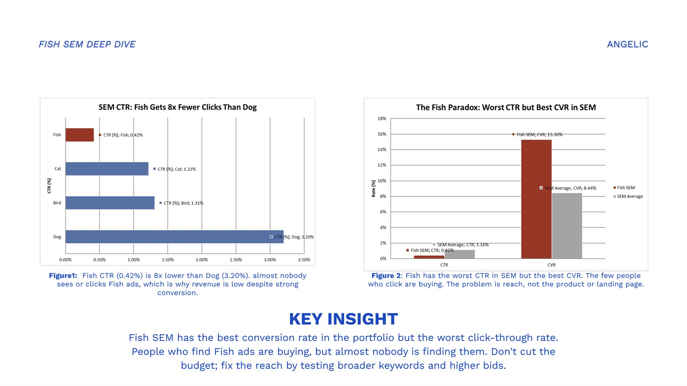
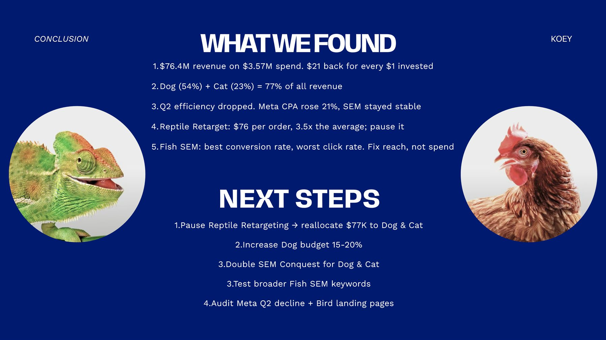
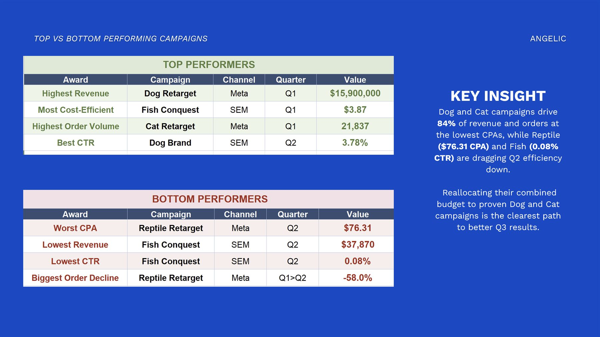
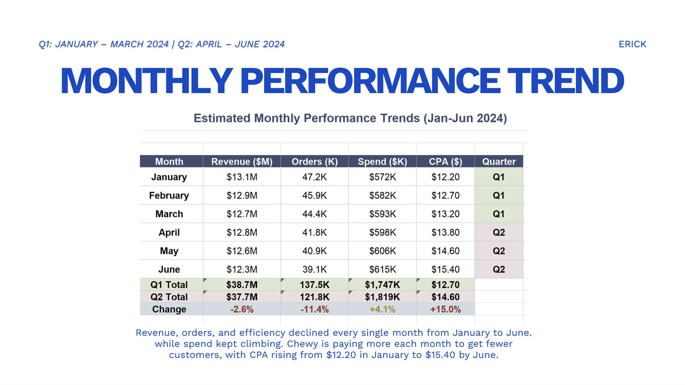
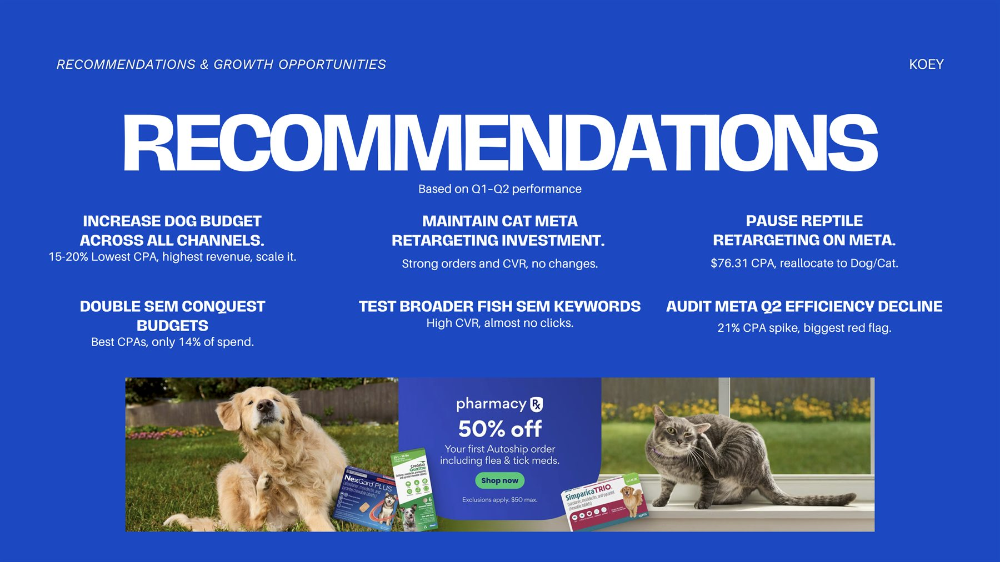

Chewy: Paid Media Performance Report
A simulated project. Chewy wasn't a real client: the brief and the ad data were provided for the simulation.






About the project
Chewy, the online pet store, spent $3.57 million on ads from January to June 2024. It wanted to know which ads were worth the money.
My team of four played the agency. We reviewed 36 ad campaigns across Google search ads and Facebook and Instagram ads, for five kinds of pets: dog, cat, bird, fish and reptile.
I was the performance analyst.
What the client asked for
- Show how each type of ad performed: spending, orders, revenue and cost
- Compare Google search results from January to March with April to June
- Point out the best and worst campaigns
- Find which campaigns got the most for the money
- Take a closer look at fish search ads, and whether reptile ads on Facebook and Instagram were worth keeping
- Put it all in a clear presentation their team could review on their own
A few words used on this page:
- Search ads
- Ads that show up on Google when someone searches, like "buy dog food online." Marketers call this "SEM."
- Facebook and Instagram ads
- Ads that show up while people scroll. Both apps are owned by Meta, so marketers call these "Meta ads."
- Campaign
- A group of ads with one goal, like selling cat food to new customers.
- Cost per order
- How much ad money was spent for each order. Lower is better. Also called "CPA."
- Click rate
- Of everyone who saw an ad, the share who clicked it.
- Conversion rate
- Of everyone who clicked an ad, the share who placed an order.
- Retargeting
- Ads shown to people who already visited Chewy.com.
- Conquest ads
- Search ads that show up when someone searches for a competitor's name.
- Bid
- The most an advertiser will pay for a click. Higher bids help ads show up more often.
What I did
As a team, we added up each campaign's weekly numbers by month and by quarter, then graded every campaign. Eleven came out on top, and eight got warning flags.
As performance analyst, I:
- Compared search ads with Facebook and Instagram ads
- Ranked the best and worst campaigns
- Measured which campaigns got the most orders for the money
- Dug into the reptile and fish campaigns the client asked about
- Presented those findings

What we found
The short version: search ads were the better deal, but Facebook and Instagram brought the volume.
- Search ads turned clicks into orders 3 times as often, and cost 42% less per order ($8.81 vs. $15.14)
- Facebook and Instagram still brought in 78% of all orders, because they reach far more people
- Results slipped every month: spending went up, orders went down, and the cost of an order rose from $12.20 to $15.40, mostly on Facebook and Instagram
- Dog and cat brought in 77% of revenue
- Reptile retargeting (ads for people who had already looked at reptile products) cost $76 per order, about 3.5 times the average, while its orders fell 58%
- Fish search ads got the fewest clicks but the best rate of clicks turning into orders: a great store on a street with no foot traffic
- Bird ads got lots of clicks but few orders, so something on the bird pages stops people from buying

What we recommended
- Pause reptile retargeting and move its $77K into Conquest ads (search ads that show up when people search for a competitor), for about 15 times as many orders
- Double the Conquest budget: it gets the cheapest orders but only 14% of search spending
- Spend 15–20% more on dog ads, which bring the cheapest orders and the most revenue
- Keep cat retargeting as it is
- Fix fish ads instead of cutting them: broader search words, higher bids and a check-in after 4 to 6 weeks
- Look into the Facebook and Instagram slowdown, and the bird pages on Chewy.com

The result
The client got a clear plan: put more money into what works, stop paying $76 an order for reptile retargeting, and fix fish and bird before cutting them.
The full report
Flip through the full report below.